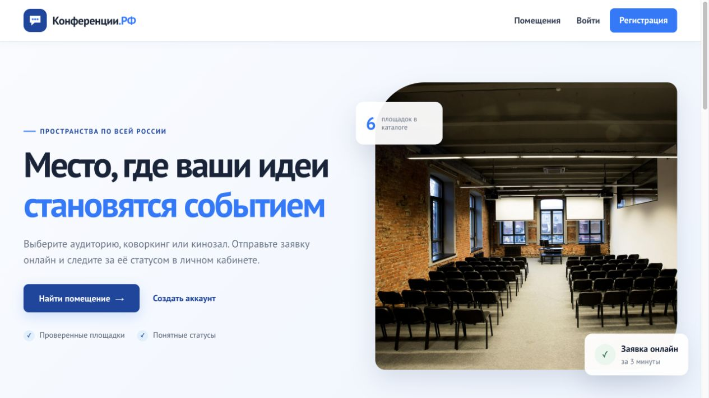
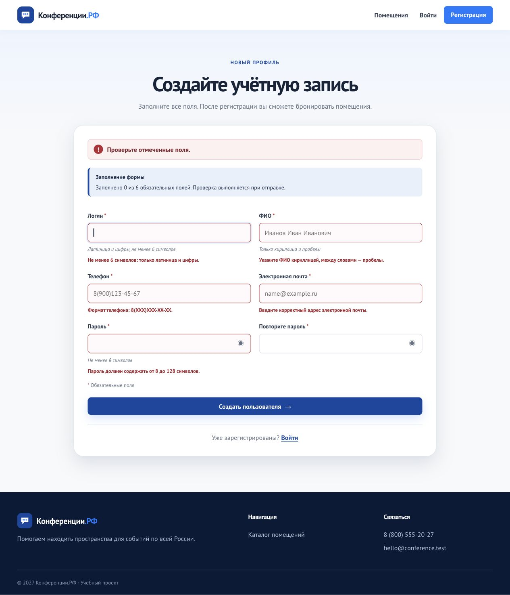
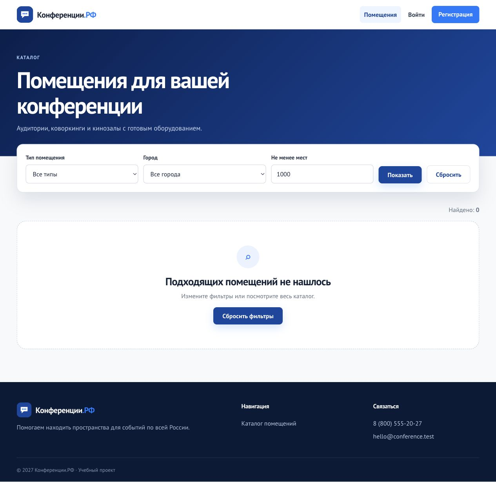
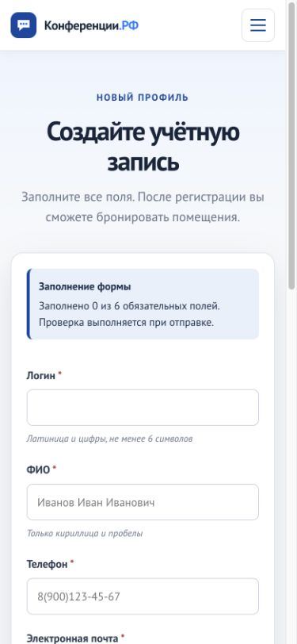
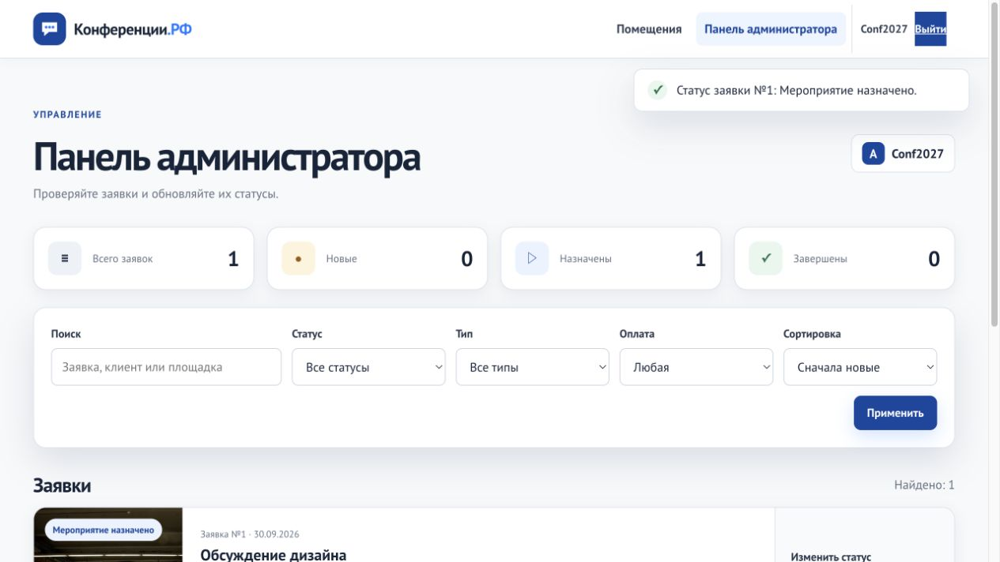

Конференции.РФ
Учебный разбор дизайна сервиса «Конференции.РФ» на Python, Flask и MySQL: запуск исходной основы, последовательное изменение интерфейса и проверка результата. Демонстрация не входит в 30 индивидуальных областей.
Учебный маршрут / 2026-2027
7 семестр · Разработчик веб и мультимедийных приложений · Python / Flask / MySQL
Учебный комплектУчебный разбор дизайна сервиса «Конференции.РФ» на Python, Flask и MySQL: запуск исходной основы, последовательное изменение интерфейса и проверка результата. Демонстрация не входит в 30 индивидуальных областей.
Разработаем дизайн «Конференции.РФ»: пользователь выбирает площадку, регистрируется и отправляет заявку; администратор назначает и завершает мероприятие; пользователь оставляет отзыв. В этом руководстве используется только Python / Flask / MySQL. Решение показано в тексте и фрагментах кода; все необходимые действия объяснены здесь.
Начальная основа содержит сервер, таблицы, каталог, формы и базовый интерфейс. Мы не переписываем весь сервер: улучшаем главное действие, обратную связь формы, доступность, карточки и мобильную компоновку. Каждый новый фрагмент добавляется в определённое место и заканчивается проверкой. Сначала выполните демонстрацию, затем создайте самостоятельный дизайн своей области.
Запуск и исходный сценарий → проектирование страниц → подключение CSS/JS → кнопки и формы → карточки и мобильный экран → интерактивная подсказка → ошибки и фокус → полный сценарий → перенос в свою область. Сохраняйте рабочее состояние после каждого законченного изменения.
Скачать начальную основу Flask + MySQL (ZIP)
Сервер и исходные страницы для учебного разбора. Дополнительный слой дизайна вы создаёте по коду методички.
Загрузите начальную основу ниже и распакуйте ZIP в отдельную папку. Это приложение до добавления учебных design.css и design.js; оно не является готовым индивидуальным проектом. В Visual Studio Code выберите File → Open Folder… / Файл → Открыть папку… и откройте projects/source/flask — папку с app.py. В левой панели должны быть видны app.py, templates, static, rooms.json и requirements.txt.
app.py принимает запросы и проверяет действия. mysql_backend.py выполняет запросы к MySQL. templates/base.html задаёт общую оболочку, остальные шаблоны — содержимое страниц. static/css/style.css и static/js/app.js — исходное оформление и поведение. rooms.json содержит первоначальные площадки; schema-mysql.sql описывает таблицы. В этой практике мы добавляем два собственных файла и подключаем их в base.html.
Откройте Terminal → New Terminal / Терминал → Создать терминал. В Windows выполните py -3 --version, в macOS — python3 --version. Нужен Python 3.10 или новее и работающий локальный MySQL. Для просмотра таблиц используйте доступный MySQL Workbench или phpMyAdmin. Запишите фактические версии; не меняйте чужие базы.
Откройте SQL Editor в MySQL Workbench либо SQL в phpMyAdmin и подключитесь как администратор своего локального учебного MySQL. Выполните следующий фрагмент один раз. Если такая база или пользователь уже существуют, выберите новые имена и затем используйте их в командах запуска. Не удаляйте существующую базу ради повторного запуска.
-- Выполните под учётной записью администратора локального MySQL. CREATE DATABASE pm08_design_2027 CHARACTER SET utf8mb4 COLLATE utf8mb4_unicode_ci; CREATE USER 'pm08_design'@'127.0.0.1' IDENTIFIED BY 'Practice2027Db!'; GRANT ALL PRIVILEGES ON pm08_design_2027.* TO 'pm08_design'@'127.0.0.1';
Учётная запись pm08_design имеет доступ только к pm08_design_2027. Показанный пароль — учебное значение для локального стенда; параметры реальной среды задавайте в переменных окружения. Сервер MySQL должен быть запущен. Порт обычно 3306; если он иной, укажите его при запуске Flask.
База пока пустая. При первом запуске Flask исходная основа применит schema-mysql.sql, загрузит шесть площадок из rooms.json и создаст учебного администратора. Поэтому не нужно вручную выполнять одновременно обе схемы или копировать таблицы из другого проекта. users хранит пользователей, rooms — площадки, applications — заявки, reviews — отзывы.
Выполните команды ниже в терминале папки с app.py. Виртуальное окружение отделяет зависимости этого проекта; прямой путь к python.exe позволяет работать без изменения ExecutionPolicy. pip устанавливает зависимости из приложенного requirements.txt. Если используете другую БД, пользователя или порт, замените соответствующие значения.
py -3 -m venv .venv .\.venv\Scripts\python.exe -m pip install -r requirements.txt $env:DB_BACKEND="mysql" $env:MYSQL_HOST="127.0.0.1" $env:MYSQL_PORT="3306" $env:MYSQL_DATABASE="pm08_design_2027" $env:MYSQL_USER="pm08_design" $env:MYSQL_PASSWORD="Practice2027Db!" .\.venv\Scripts\python.exe -m flask --app app run --port 5017
Откройте http://127.0.0.1:5017/ . Должна появиться главная страница. Перейдите в «Помещения»: видно шесть площадок. В клиенте MySQL обновите список таблиц. Оставьте терминал сервера открытым; остановка выполняется Ctrl+C. Ошибку соединения ищите в фактических host/port/user/password, а не исправляйте изменением HTML.
Для macOS выполните следующий набор команд вместо PowerShell-команд. Меняется синтаксис терминала, а Python, Flask, MySQL и весь учебный код остаются теми же.
python3 -m venv .venv .venv/bin/python -m pip install -r requirements.txt export DB_BACKEND=mysql export MYSQL_HOST=127.0.0.1 export MYSQL_PORT=3306 export MYSQL_DATABASE=pm08_design_2027 export MYSQL_USER=pm08_design export MYSQL_PASSWORD='Practice2027Db!' .venv/bin/python -m flask --app app run --port 5017
Откройте http://127.0.0.1:5017/ . Должна появиться главная страница. Перейдите в «Помещения»: видно шесть площадок. В клиенте MySQL обновите список таблиц. Оставьте терминал сервера открытым; остановка выполняется Ctrl+C. Ошибку соединения ищите в фактических host/port/user/password, а не исправляйте изменением HTML.
Откройте регистрацию. Для учебной проверки: логин pm08student, пароль Practice2027, подтверждение того же пароля, ФИО «Практика Пользователь», телефон 8(900)123-45-67, почта student@example.test. Это вымышленные данные. Войдите, откройте каталог и выберите помещение. Создайте заявку «Обсуждение дизайна»: будущая дата, 12:00, 10 участников, способ оплаты СБП. После отправки она появляется в «Мои заявки» со статусом «Новая».
Выйдите и войдите как Conf2027 / Demo77. Это учебная учётная запись администратора. Найдите заявку, выберите «Мероприятие назначено», сохраните; затем выберите «Завершено», сохраните. Выйдите и войдите как pm08student. Только после завершения доступны оценка и отзыв. Эти действия должны работать до изменения дизайна и после него.
Способ оплаты — выбранное значение, реального платежа нет. Приложение не предотвращает все пересечения бронирований. Оформление должно отражать реализованные возможности. Не обещайте оплату или автоматическую гарантию свободного зала.
Нарисуйте простые прямоугольные каркасы: главная — объяснение сервиса и переход в каталог; каталог — фильтры и карточки; регистрация/вход — заголовок, поля и отправка; заявка — выбранная площадка и параметры; кабинет — статус и действия; администратор — поиск и изменение статуса. Расположите элементы в порядке пользовательской задачи, затем сравните каркас с существующими страницами.
В демонстрации основной синий #0d47a1, текст тёмный, фон светлый, шрифт PT Sans уже подключён локально. Белая подпись на #0d47a1 имеет контраст около 8,6:1. Цвет ошибки #a81727 сопровождается текстом. Базовый интервал 8 px помогает согласовать расстояния. Отдельно обозначьте главное и вторичное действие: «Выбрать» и «Подробнее» не должны одинаково привлекать внимание.

В Explorer / Проводник правой кнопкой нажмите static → New File / Новый файл. Создайте design.css, затем design.js. Оба файла сначала пустые. Откройте templates/base.html. Добавьте только две строки подключения из фрагмента в указанные места; поясняющие комментарии переносить необязательно. Сохраните Ctrl+S (macOS Cmd+S).
<!-- templates/base.html: после подключения css/style.css, внутри <head> -->
<link rel="stylesheet" href="{{ url_for('static', filename='design.css') }}">
<!-- templates/base.html: после js/app.js, перед закрывающим </body> -->
<script src="{{ url_for('static', filename='design.js') }}" defer></script>base.html используется всеми страницами, поэтому общий дизайн подключается один раз. url_for строит правильный адрес статического файла. CSS расположен после исходного оформления: равные по специфичности правила ниже имеют приоритет. defer запускает JavaScript после разбора HTML. Не заменяйте исходные css/style.css и js/app.js: в них уже работают сетки, меню и маска телефона.
Откройте инструменты разработчика F12 (macOS Cmd+Option+I), вкладку Network / Сеть, обновите страницу. design.css и design.js должны иметь статус 200. Пока файлы пустые, вид не меняется. 404 означает неверное имя или расположение; синтаксическая ошибка JavaScript появится в Console.
Начните пустой static/design.css с блока :root. CSS-переменные хранят общие значения; сами по себе они ещё не перекрашивают элементы. Акцент нужен главному действию и фокусу, цвет ошибки — неверному полю, интервал — согласованным расстояниям.
/* Дизайн ПМ.08: добавляйте блоки в указанном порядке. */
:root {
--design-accent: #0d47a1;
--design-text: #162b48;
--design-error: #a81727;
--design-space: 8px;
}
В Elements выберите body и в Computed найдите --design-accent. Значение #0d47a1 подтверждает загрузку файла; заметное изменение появится после следующего блока.
Добавьте блок после :root. .button-primary и .nav-primary обозначают основные действия. :not(.link-button) сохраняет текстовый вид кнопки выхода. min-height: 44px увеличивает область нажатия. :focus-visible показывает фокус при навигации клавиатурой.
/* Основное действие отличается от текста и имеет контрастную подпись. */
.button-primary, .nav-primary, button[type="submit"]:not(.link-button) {
background-color: var(--design-accent);
color: #fff;
min-height: 44px;
}
a, button, input, select, textarea { touch-action: manipulation; }
:focus-visible {
outline: 3px solid var(--design-accent);
outline-offset: 4px;
}
В каталоге «Выбрать» заметнее, чем «Подробнее». Пройдите элементы Tab и Shift+Tab: фокус различим. Enter активирует выбранную кнопку/ссылку. Откройте меню и убедитесь, что «Выйти» не превратилось в главное действие.
Добавьте следующий блок. .design-summary — оформление будущей подсказки; пока JavaScript не создан, она не появится. calc использует общий интервал. .field-error оформляет уже имеющийся текст ошибки. aria-invalid добавим после серверной проверки. Радиокнопки оценки визуально скрыты, но доступны клавиатуре; фокус выделяет их видимую метку.
/* Формы: подсказка и ошибка сопровождают поле, а не только цвет. */
.design-summary {
margin: 0 0 calc(2 * var(--design-space));
padding: 12px calc(2 * var(--design-space));
border-left: 4px solid var(--design-accent);
border-radius: 8px;
background: #e9f0fa;
color: var(--design-text);
font-size: 14px;
}
.design-summary strong { display: block; margin-bottom: 4px; }
[aria-invalid="true"] { border: 2px solid var(--design-error); }
.field-error { color: var(--design-error); }
.rating-options input { width: 1px; height: 1px; clip-path: inset(50%); }
.rating-options input:focus-visible + label { outline: 3px solid var(--design-accent); }
input, select, textarea { min-height: 44px; }
Откройте регистрацию и отправьте пустую форму. Прочитайте текст ошибок. Поля остаются доступными, метки и имена не меняются. После добавления JavaScript вернитесь к этой проверке: появятся рамка ошибочного поля и подсказка заполнения.
Продолжите design.css блоком карточек. overflow-wrap позволяет переносить длинное название внутри карточки. aspect-ratio резервирует место изображения, object-fit: cover заполняет его с возможным обрезанием краёв. align-items: stretch выравнивает высоту карточек в строке.
/* Карточки сохраняют форму при длинных названиях. */
.room-card h3, .application-card h3 {
overflow-wrap: anywhere;
}
.room-card-image img {
object-fit: cover;
aspect-ratio: 16 / 10;
}
.room-grid { align-items: stretch; }
Откройте каталог на широком экране. Картинки имеют одинаковое соотношение сторон. Проверьте, что смысловой объект виден после обрезания. В своём каталоге испытайте длинное название: оно не должно выходить в соседнюю колонку.
Добавьте media query: правила действуют до 600 px. Каталог становится одноколоночным, отступы формы уменьшаются. minmax(0, 1fr) допускает сжатие колонки. Мы меняем компоновку, а не маскируем ошибку через overflow-x: hidden.
/* Узкий экран: ничего не скрываем ради устранения переполнения. */
@media (max-width: 600px) {
.form-card { padding: 20px; }
.room-grid { grid-template-columns: minmax(0, 1fr); }
.design-summary { padding: 12px; }
.filter-panel input, .filter-panel select { max-width: 100%; }
h1 { overflow-wrap: anywhere; }
}
В DevTools включите Device toolbar / Панель устройств, Responsive, ширину 390 и высоту 844. Просмотрите каждую страницу, включая вход, заявку, кабинет и администратора. Затем верните широкий экран: каталог снова многоколоночный.
Завершите design.css. Подсказка появляется с небольшой анимацией. Системное предпочтение prefers-reduced-motion: reduce отключает движение и переходы. Это улучшение не меняет отправку формы и не откладывает доступность полей.
/* Анимация обратной связи не мешает читать и вводить данные. */
.design-summary { animation: design-appear .18s ease-out; }
@keyframes design-appear {
from { opacity: 0; transform: translateY(4px); }
to { opacity: 1; transform: translateY(0); }
}
@media (prefers-reduced-motion: reduce) {
*, *::before, *::after {
animation: none !important;
transition: none !important;
scroll-behavior: auto !important;
}
}После подключения JavaScript обновите регистрацию и увидите появление подсказки. В DevTools → More tools → Rendering включите prefers-reduced-motion: reduce. Подсказка остаётся видимой и работоспособной, но движение исчезает.
Откройте templates/register.html и найдите группу логина внутри .stack-form. Ниже приведён её фрагмент с переносами для чтения; он уже есть в основе, повторно вставлять его не нужно. for/id связывают подпись с полем, name="username" соответствует ключу request.form в Python, values.username сохраняет исправляемый ввод. errors приходит от Flask после POST. Выражения {{ ... }} подставляют данные, {% if ... %} выводит сообщение только при ошибке.
<div class="field {% if errors.get('username') %}has-error{% endif %}">
<label for="username">Логин <span>*</span></label>
<input id="username" name="username" value="{{ values.username }}"
required minlength="6" pattern="[A-Za-z0-9]+"
autocomplete="username"
aria-describedby="username-hint{% if errors.get('username') %} username-error{% endif %}">
<small id="username-hint">Латиница и цифры, не менее 6 символов</small>
{% if errors.get('username') %}
<span class="field-error" id="username-error">{{ errors.username }}</span>
{% endif %}
</div>required и pattern помогают описать поле, но не заменяют серверную проверку. Исходная форма имеет novalidate, чтобы демонстрировать единые сообщения Flask. Скрытый _csrf_token связывает отправку с сессией. Не меняйте name, method="post" и CSRF ради внешнего вида. Ошибка должна быть понятна по тексту, а aria-describedby связывает подсказку и ошибку с конкретным полем.
В пустой static/design.js введите первый блок. .stack-form выбирает основную форму, а required отделяет обязательные поля. hidden исключает CSRF. У радиокнопок одного name общий ответ: считаем группу один раз. Создаём текстовые элементы безопасно через textContent, помещаем подсказку перед полями и обновляем её на input/change.
// ПМ.08: подсказка сопровождает основную форму, сервер проверяет данные.
'use strict';
const designForm = document.querySelector('.stack-form');
if (designForm) {
const allFields = [...designForm.querySelectorAll('input, select, textarea')];
const fields = allFields.filter((field, index) => field.type !== 'hidden' && field.required
&& (field.type !== 'radio' || allFields.findIndex(other => other.name === field.name) === index));
const summary = document.createElement('p');
summary.className = 'design-summary';
summary.setAttribute('role', 'status');
const heading = document.createElement('strong');
heading.textContent = 'Заполнение формы';
const counter = document.createElement('span');
summary.append(heading, counter);
designForm.prepend(summary);
function updateSummary() {
const filled = fields.filter(field => field.type === 'radio'
? allFields.some(other => other.name === field.name && other.checked)
: field.value.trim() !== '').length;
counter.textContent = `Заполнено ${filled} из ${fields.length} обязательных полей. Проверка выполняется при отправке.`;
}
designForm.addEventListener('input', updateSummary);
designForm.addEventListener('change', updateSummary);
updateSummary();
}
Обычное поле заполнено, если его обрезанное значение не пустое. Группа radio заполнена, когда хотя бы одна кнопка отмечена. Счётчик показывает факт заполнения, а не правильность телефона, пароля или даты. role="status" обозначает обновляющееся сообщение. Начальный вызов updateSummary показывает состояние сразу, а if защищает страницы без .stack-form.
На регистрации: 0 из 6 → введите логин → 1 из 6 → очистите логин → 0 из 6. На новой заявке выбор одного способа оплаты увеличивает счётчик на один; переключение способа не увеличивает число обязательных полей. Отправьте корректную форму: серверный сценарий сохраняется. Откройте каталог: в Console нет ошибки обращения к отсутствующей форме.
Добавьте второй блок в конец static/design.js, после закрывающей скобки первого if. На уже отрисованной странице ищем .field-error, затем поле внутри ближайшей .field. aria-invalid помечает неверный ввод. Set сохраняет существующие подсказки и исключает повторение идентификаторов. Фокус получает первое ошибочное поле.
// Связываем видимые серверные ошибки с соответствующими полями.
const errors = document.querySelectorAll('.field-error');
let firstInvalid = null;
errors.forEach((error, index) => {
if (!error.id) error.id = `design-error-${index}`;
const group = error.closest('.field');
// Поле и его ошибка находятся внутри одной группы .field.
const input = group ? group.querySelector('input, select, textarea') : null;
if (!input || !input.matches('input, select, textarea')) return;
input.setAttribute('aria-invalid', 'true');
const ids = new Set((input.getAttribute('aria-describedby') || '').split(/\s+/).filter(Boolean));
ids.add(error.id);
input.setAttribute('aria-describedby', [...ids].join(' '));
firstInvalid ||= input;
});
if (firstInvalid) firstInvalid.focus();Отправьте пустую регистрацию. Курсор должен быть в логине. В Elements у него видны aria-invalid="true" и aria-describedby с username-hint и username-error. Исправьте форму и отправьте повторно. Ошибки исчезают после успешной серверной проверки. Фокус не должен неожиданно перемещаться при обычном вводе: этот блок выполняется при загрузке ответа с ошибками.

Flask читает rooms из MySQL и передаёт список в templates/rooms.html. Для каждой записи подключается _room_card.html. Поля name, description, city, capacity, hourly_rate и image определяют содержимое; CSS определяет вид. Фильтр отправляет GET-параметры и сохраняет выбранные значения. Это позволяет видеть условие текущего результата.
Выберите тип помещения и нажмите «Показать»: остаются соответствующие карточки, выбранный тип сохраняется. Укажите минимальную вместимость 1000: список пуст, появляется сообщение и возможность сбросить фильтр. Верните все помещения. Пустой результат отличается от ошибки соединения с MySQL — у них разные причины и сообщения.

При 390×844 поля регистрации стоят последовательно, основная кнопка доступна после прокрутки, меню раскрывается отдельной кнопкой. На широком экране форма снова использует колонки. Откройте меню клавиатурой, пройдите ссылки и закройте его. Проверьте также личный кабинет под обычным пользователем и панель под администратором: это разные экраны.
В Elements найдите элемент, который шире своей колонки. Проверьте фиксированную ширину, min-width, длинный непрерывный текст и grid-колонки. Исправьте причину. Вертикальная прокрутка длинной формы ожидаема; горизонтальный выход поля за экран мешает вводу.

Войдите как обычный пользователь. Создайте новую заявку и откройте кабинет. Выйдите, войдите как администратор, назначьте мероприятие и завершите его. Снова войдите как пользователь и оставьте отзыв. Не проверяйте пользовательскую форму под администратором: приложение направляет его в панель управления.
Статус должен иметь видимый текст: «Новая», «Мероприятие назначено», «Завершено». Цвет помогает различить состояния, но не заменяет подпись. После сохранения действия показывается сообщение результата. Отзыв доступен после завершения; CSS не должен делать недоступное действие похожим на рабочее.

Найдите свой номер в «Списке предметных областей» и загрузите его JSON. В новой копии исходной основы замените rooms.json до первого запуска. Создайте отдельную пустую БД с новым именем и обновите MYSQL_DATABASE; предоставьте своему пользователю права на неё. При первом запуске загрузятся три ресурса области. Замена JSON в уже заполненной БД не обновляет автоматически строки MySQL.
Измените названия сервиса, ресурсов, событий и действия по смыслу области. Технические значения auditorium/coworking/cinema сохраняйте для фильтра, а видимые подписи задавайте через ROOM_TYPE_LABELS в app.py. Разработайте палитру, типографику и композицию под своего пользователя. Изображения должны соответствовать ресурсу; примерные адреса и цены в каталоге вымышленные.
Прочитайте оба условия своей области. Для каждого запишите пользовательскую проблему, место изменения, решение и фактическую проверку. Например, оснащение помогает понять, подходит ли зал; перенос длинного названия позволяет прочитать событие на мобильном экране. Простая замена цвета сама по себе не объясняет решение пользовательской задачи.
Пользователь видит вместимость, но не знает, есть ли нужное оборудование. В поле equipment каталога эти данные уже есть. В templates/_room_card.html найдите <p>{{ room['description'] }}</p> и добавьте после него следующий фрагмент. Это дополнительный учебный приём; применяйте его там, где этого требует ваша область.
<!-- templates/_room_card.html: после <p>{{ room['description'] }}</p> -->
{% if room['equipment'] %}
<p class="room-equipment"><strong>Оснащение:</strong> {{ room['equipment'] }}</p>
{% endif %}if не выводит пустую строку при отсутствии оборудования. Jinja экранирует значение, поэтому обычный текст показывается как текст. Не используйте |safe для данных каталога. В static/design.css своей области оформите .room-equipment как вторичную информацию, сохраняя читабельность. Не подменяйте основное действие декоративным блоком.
Откройте карточку с заполненным equipment: текст появился после описания. Испытайте длинную строку на 390×844 и отсутствие equipment. Повторите выбор площадки и создание заявки: добавление HTML не должно менять параметры отправки.
В Network проверьте статус 200 и содержимое design.css. В Elements → Styles найдите своё правило: зачёркнутое правило уступило более специфичному или расположенному ниже. Проверьте имя класса и порядок подключений. Не увеличивайте специфичность наугад и не добавляйте !important ко всему файлу.
Console показывает строку первой синтаксической ошибки. Проверьте скобки, кавычки и имя файла. На странице без формы designForm равен null — это штатно, код внутри if не выполняется. Подсказка не должна вмешиваться в method, action, name и скрытый CSRF.
Если каталог не обновился, проверьте выбранную новую БД и первый запуск с нужным rooms.json. Если ответ 400, сначала проверьте сохранность CSRF и обновите форму. Если ответ 503, проверьте доступность MySQL. Не маскируйте серверную ошибку стилями или постоянным сообщением «успешно».
Пройдите регистрацию с ошибкой и успехом, вход, фильтр и пустой результат, заявку, чужую заявку, смену статусов и отзыв. В терминале проекта для тестов задайте PORTAL_TEST_MYSQL=1 и MYSQL_PORT своего сервера; выполните python окружения -m pytest -q. Тесты создают отдельную временную БД rvpm_test_…; выбранному тестовому пользователю нужны права её создания. Не выдавайте приложению глобальные права ради проверки — используйте отдельную тестовую учётную запись администратора. Ожидается 8 passed.
Просмотрите каждую страницу на широком экране и 390×844. Проверьте основное действие, вторичные кнопки, длинные названия, ошибку рядом с полем, клавиатурный фокус и reduced motion. Сопоставьте результат с каркасом: объясните, как каждое изменение помогает пользователю выполнить действие.
Зафиксируйте осмысленные изменения в Git. Не включайте виртуальное окружение, сессии и реальные секреты. Заполняйте общий шаблон отчёта своими решениями и фактическими результатами проверки. При сдаче проекта приложите ссылку на его репозиторий. Снимки должны показывать ваш интерфейс, а не повторять учебную демонстрацию.